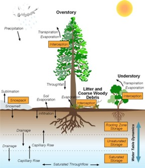
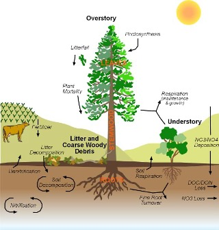

RHESSys
What is RHESSys?
The Regional Hydro-Ecologic Simulation System (RHESSys) is a GIS-based, hydro-ecological modeling framework designed to simulate carbon, water and nutrient fluxes. By combining a set of physically-based process models and a methodology for partitioning and parameterizing the landscape, RHESSys is capable of modelling the spatial distribution and spatial-temporal interactions between different processes at the watershed scale.
Features of RHESSys
- Operates at a daily timestep to capture hydrological fluxes
- RHESSys is primarily written in C. WMFire is written in C++.
- Input/output tools are available in R.
- Nitrogen cycling is fully integrated with carbon cycling.
- Any variable within the model may be outputted for analysis.
- Outputs can be generated at daily, monthly, and annual timesteps.


How do I get RHESSys?
RHESSys can be downloaded from GitHub. The standard version of the model is available for Linux and MacOS. Windows users will generally need to install Linux on their PCs. Once downloaded, the standard version of RHESSys requires compiling in order to operate. RHESSys is also available via a Docker, which allows installation without compiling. Please refer to the RHESSys Wiki for full details on how to obtain the standard or Docker versions of RHESSys.
The most recent release of RHESSys is Version 7.4, which is recommended for all new users. Version releases are made periodally from trunk, which is the most stable branch of RHESSys. If more advanced features are desired, the develop branch is used for development and contains the most recent updates.
How do I get help with RHESSys?
Documentation of running RHESSys is currently available via the RHESSys Wiki